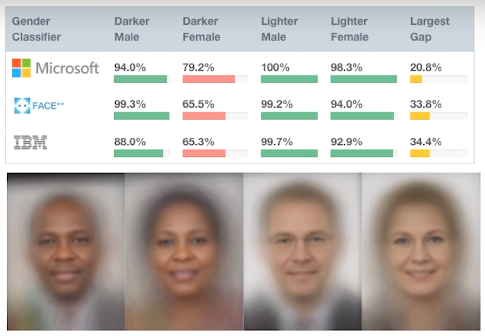
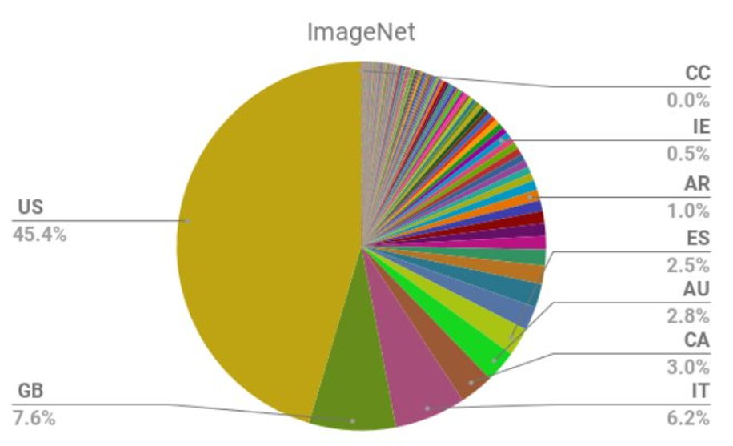

AI is being increasingly used to make important decisions. Many AI experts (including Jeff Dean, head of AI at Google, and Andrew Ng, founder of Coursera and deeplearning.ai) say that warnings about sentient robots are overblown, but other harms are not getting enough attention. I agree. I am an AI researcher, and I’m worried about some of the societal impacts that we’re already seeing. In particular, these 5 things scare me about AI:
- Algorithms are often implemented without ways to address mistakes.
- AI makes it easier to not feel responsible.
- AI encodes & magnifies bias.
- Optimizing metrics above all else leads to negative outcomes.
- There is no accountability for big tech companies.
At the end, I’ll briefly share some positive ways that we can try to address these.
Before we dive in, I need to clarify one point that is important to understand: algorithms (and the complex systems they are a part of) can make mistakes. These mistakes come from a variety of sources: bugs in the code, inaccurate or biased data, approximations we have to make (e.g. you want to measure health and you use hospital readmissions as a proxy, or you are interested in crime and use arrests as a proxy. These things are related, but not the same), misunderstandings between different stakeholders (policy makers, those collecting the data, those coding the algorithm, those deploying it), how computer systems interact with human systems, and more.
This article discusses a variety of algorithmic systems. I don’t find debates about definitions particularly interesting, including what counts as “AI” or if a particular algorithm qualifies as “intelligent” or not. Please note that the dynamics described in this post hold true both for simpler algorithms, as well as more complex ones.
- Algorithms are often implemented without ways to address mistakes.
After the state of Arkansas implemented software to determine people’s healthcare benefits, many people saw a drastic reduction in the amount of care they received, but were given no explanation and no way to appeal. Tammy Dobbs, a woman with cerebral palsy who needs an aid to help her to get out of bed, to go to the bathroom, to get food, and more, had her hours of help suddenly reduced by 20 hours a week, transforming her life for the worse. Eventually, a lengthy court case uncovered errors in the software implementation, and Tammy’s hours were restored (along with those of many others who were impacted by the errors).
Observations of 5th grade teacher Sarah Wysocki’s classroom yielded positive reviews. Her assistant principal wrote, “It is a pleasure to visit a classroom in which the elements of sound teaching, motivated students and a positive learning environment are so effectively combined.” Two months later, she was fired by an opaque algorithm, along with over 200 other teachers. The head of the PTA and a parent of one of Wyscoki’s students described her as “One of the best teachers I’ve ever come in contact with. Every time I saw her, she was attentive to the children, went over their schoolwork, she took time with them and made sure.” That people are losing needed healthcare without an explanation or being fired without explanation is truly dystopian!

As I covered in a previous post, people use outputs from algorithms differently than they use decisions made by humans:
- Algorithms are more likely to be implemented with no appeals process in place.
- Algorithms are often used at scale.
- Algorithmic systems are cheap.
- People are more likely to assume algorithms are objective or error-free. As Peter Haas said, “In AI, we have Milgram’s ultimate authority figure,” referring to Stanley Milgram’s famous experiments showing that most people will obey orders from authority figures, even to the point of harming or killing other humans. How much more likely will people be to trust algorithms perceived as objective and correct?
There is a lot of overlap between these factors. If the main motivation for implementing an algorithm is cost-cutting, adding an appeals process (or even diligently checking for errors) may be considered an “unnecessary” expense. Cathy O’Neill, who earned her math PhD at Harvard, wrote a book Weapons of Math Destruction, in which she covers how algorithms are disproportionately impacting poor people, whereas the privileged are more likely to still have access to human attention (in hiring, education, and more).
- AI makes it easier to not feel responsible.
Let’s return to the case of the buggy software used to determine health benefits in Arkansas. How could this have been prevented? In order to prevent severely disabled people from mistakenly losing access to needed healthcare, we need to talk about responsibility. Unfortunately, complex systems lend themselves to a dynamic in which nobody feels responsible for the outcome.
The creator of the algorithm for healthcare benefits, Brant Fries (who has been earning royalties off this algorithm, which is in use in over half the 50 states), blamed state policy makers. I’m sure the state policy makers could blame the implementers of the software. When asked if there should be a way to communicate how the algorithm works to the disabled people losing their healthcare, Fries callously said, “It’s probably something we should do. Yeah, I also should probably dust under my bed,” and then later clarified that he thought it was someone else’s responsibility.
This passing of the buck and failure to take responsibility is common in many bureaucracies. As danah boyd observed, “Bureaucracy has often been used to shift or evade responsibility. Who do you hold responsible in a complex system?” Boyd gives the examples of high-ranking bureaucrats in Nazi Germany, who did not see themselves as responsible for the Holocaust. boyd continues, “Today’s algorithmic systems are extending bureaucracy.”
Another example of nobody feeling responsible comes from the case of research to classify gang crime. A database of gang members assembled by the Los Angeles Police Department (and 3 other California law enforcement agencies) was found to have 42 babies who were under the age of 1 when added to the gang database (28 were said to have admitted to being gang members). Keep in mind these are just some of the most obvious errors- we don’t know how many other people were falsely included.
I don’t bring this up for the primary purpose of pointing fingers or casting blame. However, a world of complex systems in which nobody feels responsible for the outcomes (which can include severely disabled people losing access to the healthcare they need, or innocent people being labeled as gang members) is not a pleasant place. Our work is almost always a small piece of a larger whole, yet a sense of responsibility is necessary to try to address and prevent negative outcomes.
- AI encodes & magnifies bias.
But isn’t algorithmic bias just a reflection of how the world is? I get asked a variation of this question every time I give a talk about bias. To which my answer is: No, our algorithms and products impact the world and are part of feedback loops. Consider an algorithm to predict crime and determine where to send police officers: sending more police to a particular neighhorhood is not just an effect, but also a cause. More police officers can lead to more arrests in a given neighborhood, which could cause the algorithm to send even more police to that neighborhood (a mechanism described in this paper on runaway feedback loops).
Bias is being encoded and even magnified in a variety of applications:
- software used to decide prison sentences that has twice as high a false positive rate for Black defendents as for white defendents
- computer vision software from Amazon, Microsoft, and IBM performs significantly worse on people of color

- Word embeddings, which are a building block for language tools like Gmail’s SmartReply and Google Translate, generate useful analogies such as Rome:Italy :: Madrid:Spain, as well as biased analogies such as man:computer programmer :: woman: homemaker.
- Machine learning used in recruiting software developed at Amazon penalized applicants who attended all-women’s colleges, as well as any resumes that contained the word “women’s.”
- Over 2/3 of the images in ImageNet, the most studied image data set in the world, are from the Western world (USA, England, Spain, Italy, Australia).

Since a Cambrian explosion of machine learning products is occuring, the biases that are calcified now and in the next few years may have a disproportionately huge impact for ages to come (and will be much harder to undo decades from now).
- Optimizing metrics above all else leads to negative outcomes.
Worldwide, people watch 1 billion hours of YouTube per day (yes, that says PER DAY). A large part of YouTube’s successs has been due to its recommendation system, in which a video selected by an algorithm automatically begin playing once the previous video is over. Unfortunately, these recommendations are disproportionately for conspiracy theories promoting white supremacy, climate change denial, and denial of the mass shootings that plague the USA. What is going on? YouTube’s algorithm is trying to maximize how much time people spend watching YouTube, and conspiracy theorists watch significantly more YouTube than people who trust a variety of media sources. Unfortunately, a recommendation system trying only to maximize time spent on its own platform will incentivize content that tells you the rest of the media is lying.
“YouTube may be one of the most powerful radicalizing instruments of the 21st century,” Professor Zeynep Tufekci wrote in the New York Times. Guillaume Chaslot is a former YouTube engineer turned whistleblower. He has been outspoken about the harms caused by YouTube, and he partnered with the Guardian and the Wall Street Journal to study the extremism and bias in YouTube’s recommendations.
[Photo of Guillaume Chaslot from the Guardian article]{chaslot.png){width=60%}
YouTube is owned by Google, which is earning billions of dollars by aggressively introducing vulnerable people to conspiracy theories, while the rest of society bears the externalized costs of rising authoritarian governments, a resurgence in white supremacist movements, failure to act on climate change (even as extreme weather is creating increasing numbers of refugees), growing distrust of mainstream news sources, and a failure to pass sensible gun laws.
This problem is an example of the tyranny of metrics: metrics are just a proxy for what you really care about, and unthinkingly optimizing a metric can lead to unexpected, negative results. One analog example is that when the UK began publishing the success rates of surgeons, heart surgeons began turning down risky (but necessary) surgeries to try to keep their scores as high as possible.
Returning to the account of the popular 5th grade teacher who was fired by an algorithm, she suspects that the underlying reason she was fired was that her incoming students had unusually high test scores the previous year (making it seem like their scores had dropped to a more average level after her teaching), and that their former teachers may have cheated. As USA education policy began over-emphasizing student test scores as the primary way to evaluate teachers, there have been widespread scandals of teachers and principals cheating by altering students scores, in Georgia, Indiana, Massachusetts, Nevada, Virginia, Texas, and elsewhere. When metrics are given undue importance, attempts to game those metrics become common.
- There is no accountability for big tech companies.
Major tech companies are the primary ones driving AI advances, and their algorithms impact billions of people. Unfortunately, these companies have zero accountability. YouTube (owned by Google) is helping to radicalize people into white supremacy. Google allowed advertisers to target people who search racist phrases like “black people ruin neighborhoods” and Facebook allowed advertisers to target groups like “jew haters”. Amazon’s facial recognition technology misidentified 28 members of congress as criminals, yet it is already in use by police departments. Palantir’s predictive policing technology was used for 6 years in New Orleans, with city council members not even knowing about the program, much less having any oversight. The newsfeed/timeline/recommendation algorithms of all the major platforms tend to reward incendiary content, prioritizing it for users.
In early 2018, the UN ruled that Facebook had played a “determining role” in the ongoing genocide in Myanmar. “I’m afraid that Facebook has now turned into a beast,” said the UN investigator. This result was not a surprise to anyone who had been following the situation in Myanmar. People warned Facebook executives about how the platform was being used to spread dehumanizing hate speech and incite violence against an ethnic minority as early as 2013, and again in 2014 and 2015. As early as 2014, news outlets such as Al Jazeera were covering Facebook’s role in inciting ethnic violence in Myanmar.
One person close to the case said, “That’s not 20/20 hindsight. The scale of this problem was significant and it was already apparent.” Facebook execs were warned in 2015 that Facebook could play the same role in Myanmar that radio broadcasts had played during the 1994 Rwandan genocide. As of 2015, Facebook only employed 4 contractors who spoke Burmese (the primary language in Myanmar).
Contrast Facebook’s inaction in Myanmar with their swift action in Germany after the passage of a new law, which could have resulted in penalties of up to 50 million euros. Facebook hired 1,200 German contractors in under a year. In 2018, five years after Facebook was first warned about how they were being used to incite violence in Myanmar, they hired “dozens” of Burmese contractors, a fraction of their response in Germany. The credible threat of a large financial penalty may be the only thing Facebook responds to.
While it can be easy to focus on regulations that are misguided or ineffective, we often take for granted safety standards and regulations that have largely worked well. One major success story comes from automobile safety. Early cars had sharp metal knobs on dashboard that lodged in people’s skulls during crashes, plate glass windows that shattered dangerously, and non-collapsible steering columns that would frequently impale drivers. Beyond that, there was a widespread belief that the only issue with cars was the people driving them, and car manufactures did not want data on car safety to be collected. It took consumer safety advocates decades to push the conversation to how cars could be designed with greater safety, and to pass laws regarding seat belts, driver licenses, crash tests, and the collection of car crash data. For more on this topic, Datasheets for Datasets covers cases studies of how standardization came to the electronics, pharmaceutical, and automobile industries, and 99% Invisible has a deep dive on the history of car safety (with parallels and contrasts to the gun industry).
How We Can Do Better
The good news: none of the problems listed here are inherent to algorithms! There are ways we can do better:
- Make sure there is a meaningful, human appeals process. Plan for how to catch and address mistakes in advance.
- Take responsibility, even when our work is just one part of the system.
- Be on the lookout for bias. Create datasheets for data sets.
- Choose not to just optimize metrics.
- Push for thoughtful regulations and standards for the tech industry.
The problems we are facing can feel scary and complex. However, it is still very early on in this age of AI and increasing algorithmic automation. Now is a great time to take action: we can change our culture, cultivate a greater sense of responsibility for our work, seek out thoughtful accountability to counterbalance the inordinate power that major tech companies have, and choose to create more humane products and systems. Technology is just a tool, and it can be used for good or bad. Let’s work to use it for good, to improve the lives of many, rather than just generate wealth for a small number of people.
Related Posts
You may be interested in these related posts on tech and ethics: